Student journalist
Yana
Bottigliero
Digital Editor-in-Chief, North Pointe
Grosse Pointe North High School
Campaign Fellow, Kevin Hertel for State Senate
I report, write, edit and design for a student newsroom. Seven awards in two years. Here is the work and what I learned from each piece.
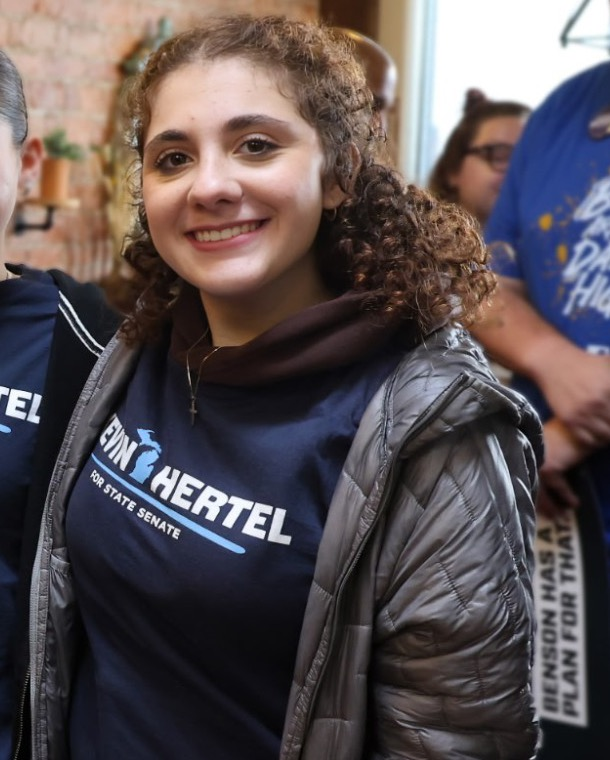
- 7awards
- 4.2GPA
- {{COUNT}}published pieces
- 3newsroom roles in 2 years
About
“A matter of getting out on a damn limb and sawing it off behind you.”
Lee Miller, on her work as a photojournalist on the front lines of World War II
My name is Yana Bottigliero, and, like my hero, I have always believed that the principles of journalism are based on blind instinct. An instinct to inform and educate others about our world. To show and appreciate the beautiful. To display and expose the ugly. From wanting to rescue endangered animals when I was five to attending a rally to defend women's reproductive rights when I was twelve, inspiring change has always been my ultimate goal. I have been a member of North Pointe, our student-run newspaper at Grosse Pointe North High School, for two years, and I am in a position to use my words to motivate the change I have been hoping for ever since I was a little girl.
In a digital world where AI and misinformation are on the rise, accurate and unbiased news is more threatened than ever. I am excited to protect it in my role as Digital Editor-in-Chief. Working on the paper, I have learned to market North Pointe across social media apps and formats to reach different audiences. I have gotten much better at telling stories visually through infographics and short videos, which matters for a digital generation like Gen Z and makes our stories easier to understand. Next I want to master our website on SNO, plus live reporting and interviewing so I can stretch into broadcast journalism.
Outside North Pointe, I play on the girls' varsity tennis team, serve as President of the Spanish Club and am a member of Peer2Peer, which promotes mental health awareness and fights the stigma around it. My main hobbies are being a major Swiftie, baking and traveling.
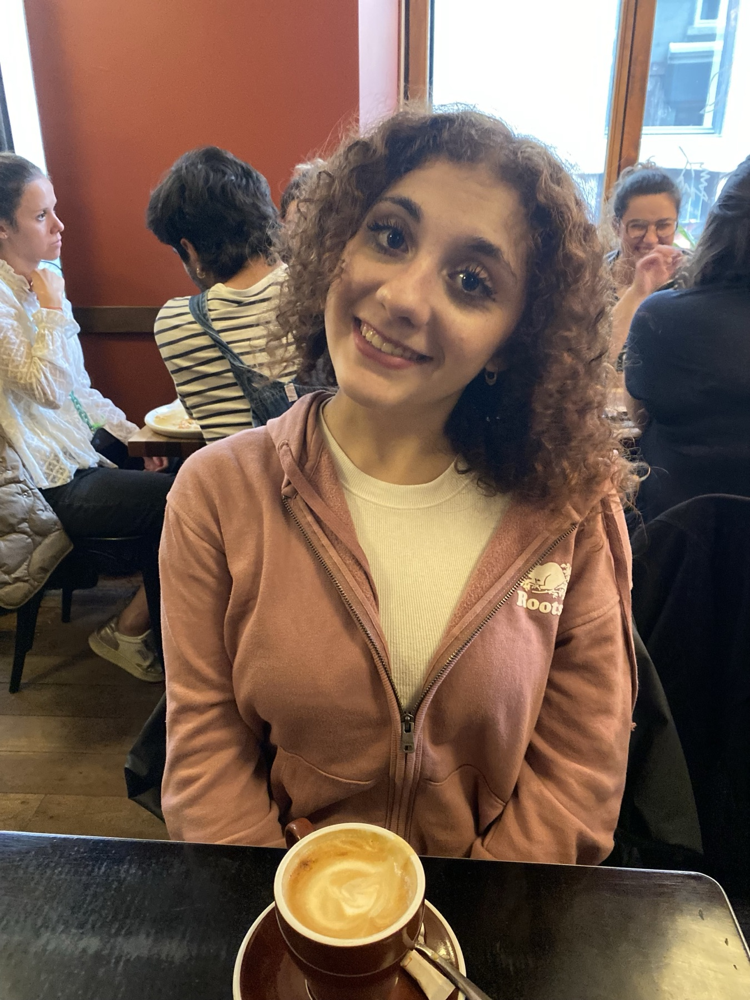
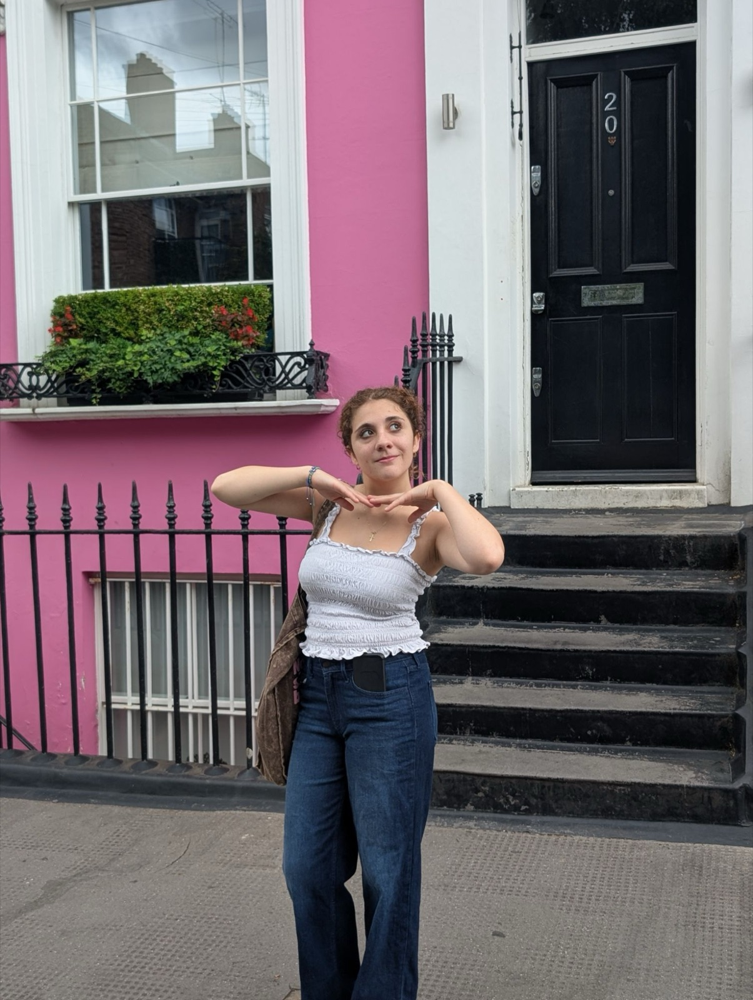
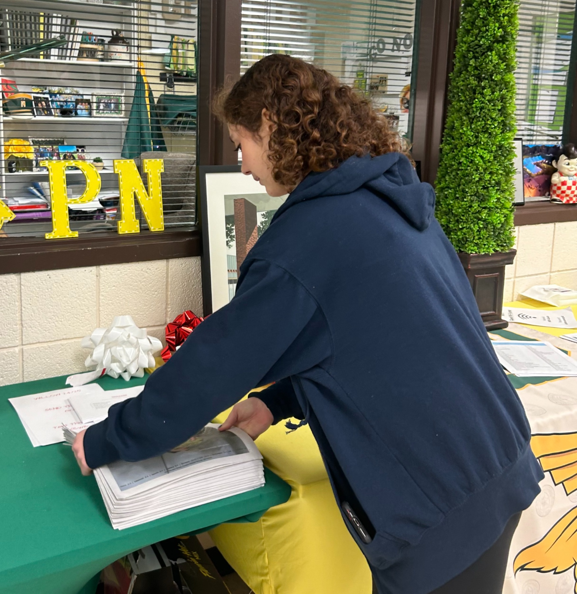
Accolades
The awards
Grosse Pointe North High School · 2026
Hammer Award
For bringing back North Pointe's Freshman Edition.
Six MIPA awards
Michigan Interscholastic Press Association, the statewide scholastic press competition.
-
{{AWARDS}}
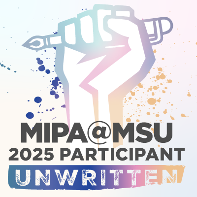
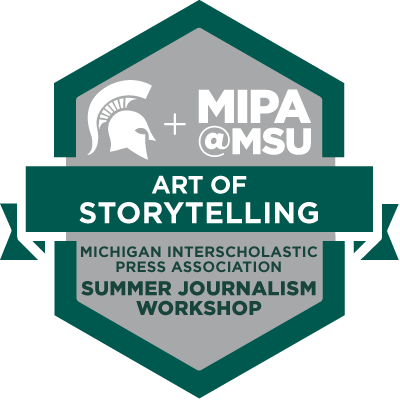
On the campaign trail
Campaign fellow
Kevin Hertel for State Senate, Michigan Senate District 12 · 2026
In 2026 Yana joined State Senator Kevin Hertel's re-election campaign as a fellow. District 12 covers her hometown of Grosse Pointe along with St. Clair Shores, Harper Woods, Mount Clemens and New Baltimore. It is a competitive race, and the election is November 3, 2026.
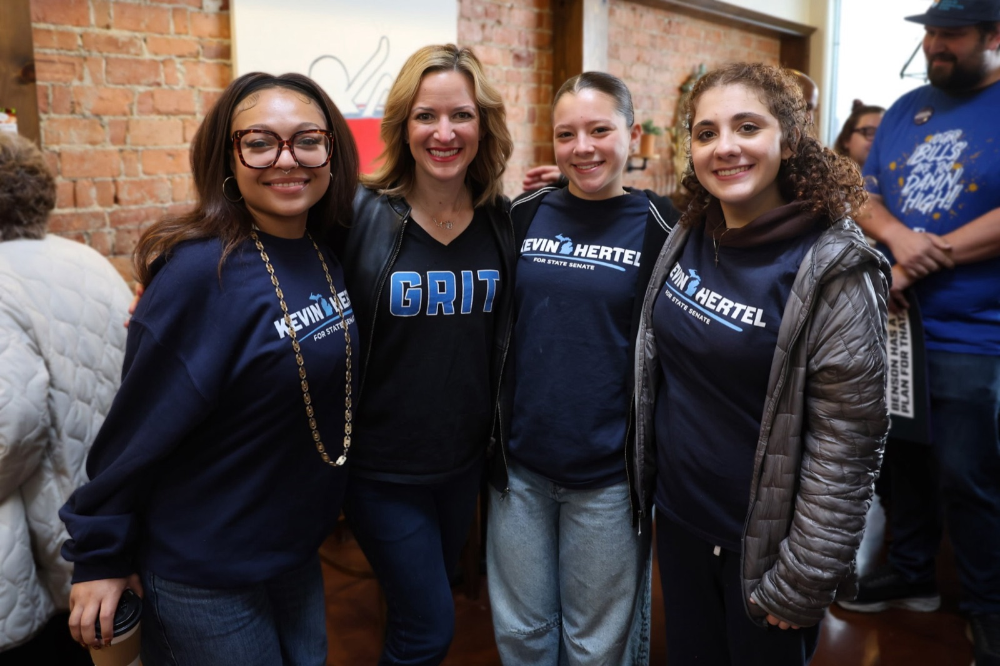
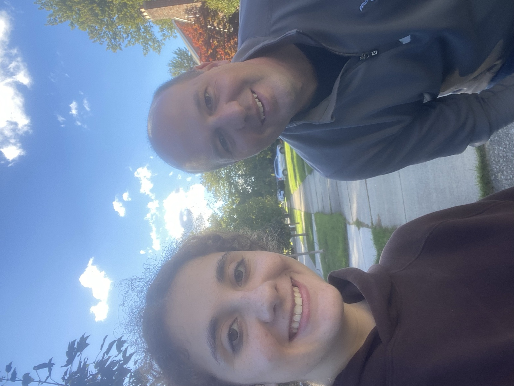
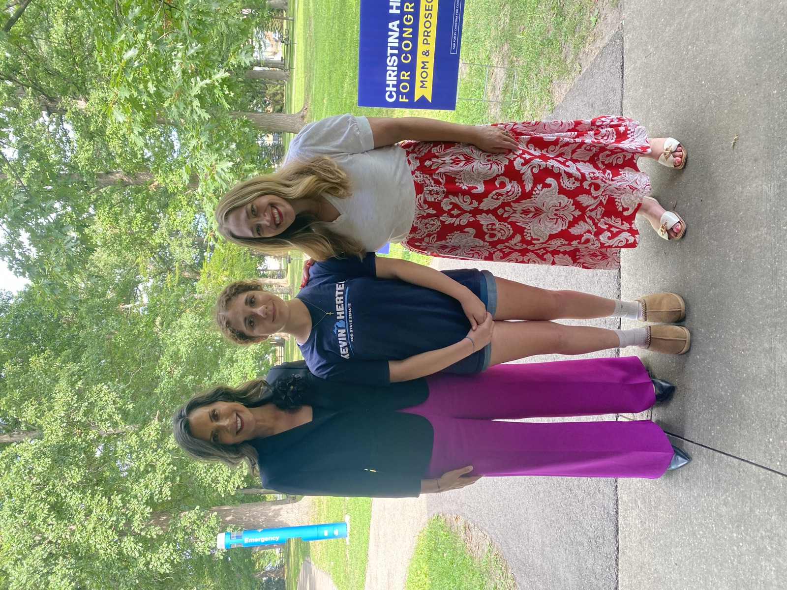
Independent project
USA Rights Tracker
A civic reference site Yana built that tracks state-level rights across the United States.
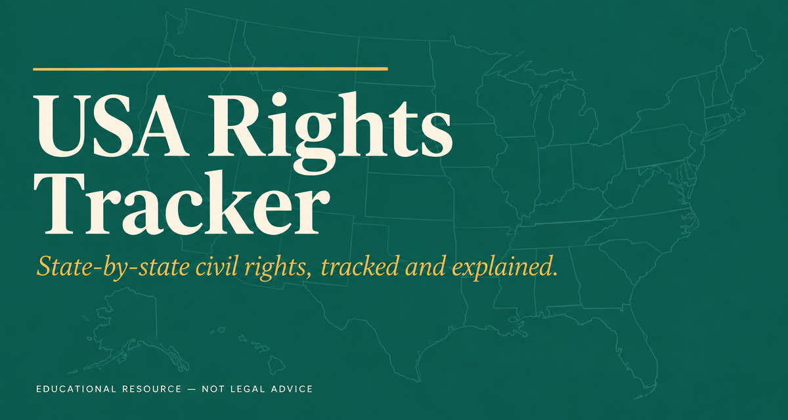
- 50 states + 5 territorieseach scored from 1 (danger) to 10 (good)
- 12 categoriesfrom reproductive and voting rights to free speech, equal pay and children's privacy
- English and Spanishwith an interactive map and an accessible list view
- Sourcedpublished methodology, sources, a legal glossary and a changelog
Resume
The record
Journalism
Digital Editor-in-Chief, North Pointe
2026 to present
Leads North Pointe's website and social channels and the visual storytelling that reaches a digital audience.
News Section Editor, North Pointe
2025 to 2026
- Designed page layouts in InDesign for the news section of the print paper
- Edited staff reporters' articles and gave suggestions in first reads
- Decided article topics and visuals while running pitch meetings with writers
Intern, promoted to Staff Reporter, North Pointe
2024 to 2025
- Wrote opinion and informative articles for print and web
- Contacted local businesses to sponsor the newspaper
- Designed infographics and artwork featured in issues
MIPA Student Media Leadership Workshop
2025
- Worked with schools across the state on common problems student newspapers face
- Applied new ideas from professionals and set concrete goals for North Pointe
- Brought the feedback back to North Pointe's editorial board to improve the paper and website
MIPA Summer Journalism Workshop
2025
- Completed the Art of Storytelling course on writing compelling stories
- Attended panels where professional journalists from every area of the field shared their experience
- Traded storytelling tips with student journalists and experts from around Michigan
Projects
Creator, USA Rights Tracker
2026
- Built a bilingual civic reference site scoring rights in all 50 states and 5 U.S. territories across 12 categories
- Published scoring methodology, sources, a legal glossary and a changelog
Politics
Campaign Fellow, Kevin Hertel for State Senate
2026
- Only high school fellow for most of the campaign
- Re-election campaign for Michigan Senate District 12
Work
Associate, The Friendship Factory
2026 to present
- Customer service and restocking in retail
- Works children's parties in the party area and at outside events
- Braiding, temporary tattoos, manicures and pedicures for parties and walk-ins
Camp Counselor, The Neighborhood Club
2024 to 2025
- Led activities for campers as young as four
- Helped organize field trips and outings
- Resolved conflicts between campers
Babysitter, self-employed
2023 to present
- Built a website for her babysitting business
- Trusted by local families with children as young as six months
- Grew a name as a young entrepreneur in the community
Portfolio
The clips
Every piece Yana has published with North Pointe, with her own reflection on what worked and what she would change.
Sophomore year News Section Editor, promoted to Digital Editor-in-Chief
Freshman year Intern, promoted to Staff Reporter
Beyond the newsroom
Other work
Mental health
Peer2Peer
Member of the student group that promotes mental health awareness and works against the stigma around it.
Leadership
Spanish Club President
Runs Grosse Pointe North's Spanish Club.
Athletics
Varsity Tennis
Plays on the girls' varsity tennis team.
Business
Babysitting business
Started her own babysitting business and built its website.
Contact
Let's talk
Admissions officers, coaches and editors are welcome to reach out.
- College inquiries
- liljana.bottigliero2028@gmail.com
- Everything else
- liljana.bottigliero@gmail.com
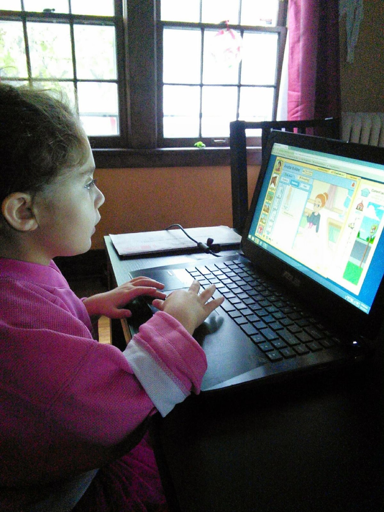